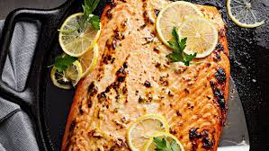

Baked Lemon Herb Salmon

Description
Baked lemon herb salmon is a delicious and healthy dish made with fresh salmon fillets. The fillets are seasoned with herbs like thyme, or rosemary, along with garlic, salt, and pepper. After marinating or coating the salmon, it is baked until tender and flaky.This dish is known for its vibrant taste, delicate texture, and the harmonious combination of salmon, herbs, and lemon. It is commonly served as a main course with side dishes such as roasted vegetables, rice, or salad.
Ingredients
- 4 salmon fillets.
- 2 lemons, sliced.
- 2 tablespoons olive oil.
- 2 cloves garlic, minced.
- 1 teaspoon dried thyme.
- 1 teaspoon dried rosemary.
- Salt and pepper to taste.
Steps on how to prepare it
- Preheat the oven to 375°F (190°C) and line a baking sheet with foil.
- Place the salmon fillets on the prepared baking sheet.
- Drizzle olive oil over the salmon and rub minced garlic on top.
- Sprinkle dried thyme, dried rosemary, salt, and pepper evenly over the fillets.
- Arrange lemon slices on top of the salmon.
- Bake for about 15-18 minutes or until the salmon is cooked through and flakes easily with a fork.